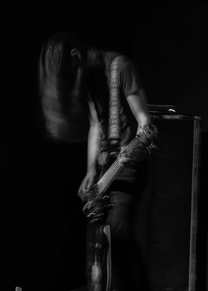

Antoni Nicyfor
Antoni Nicyfor is a current student of Music Technology at Douglas College.
Equally comfortable as recording talent or behind the console, he offers remote Producing and Mixing services.
He currently releases Electronic & Metal music under his own name as well as side project Calling Card.
